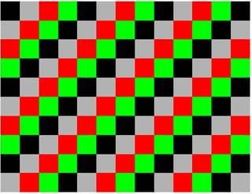

candy_count, a Fortran90 code which counts the types of candy in a rectangular container, which might be a vector, matrix, or 3D box. The candy is assumed to have C possible types, and to have been entered into the container in a cycle that begins with type 1. While the vector case is easy, it is already difficult to come up with a general formula for the MxN matrix case.
We are given a (rectangular) container of candy containing C distinct types, and asked to report how many of each type there are.
The container has been filled by a machine, which automatically starts with candy type 1, then puts candy type 2 in the next open position, and so on, until candy type C is used, at which point the machine cycles back to candy type 1, repeating this process until the container is filled.
we want to know how many candies of each type there are. We could imagine simply dumping out the container and counting. But is there a mathematical way to do this, based on the shape of the container.
We can imagine three simple cases, in which the candy comes in a rectangular container which can be thought of as a vector of length N, or an M by N matrix, or an L by M by N box. The counting is simple for the vector, but is already tricky for the case of a matrix.
As an illustration, here is a M=10 by N=13 matrix, containing C=4 candy types, with 33 examples of types 1 and 2, and 32 examples of types 3 and 4.

The information on this web page is distributed under the MIT license.
candy_count is available in a C version and a C++ version and a Fortran77 version and a Fortran90 version and a MATLAB version and an Octave version and a Python version.